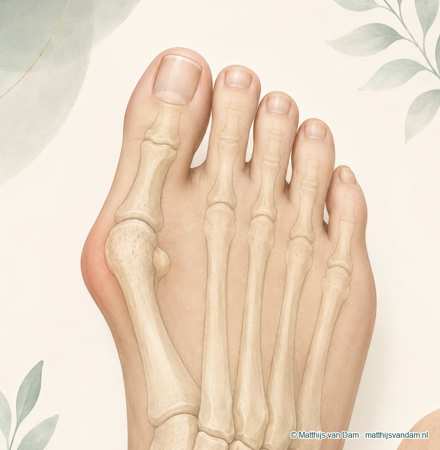
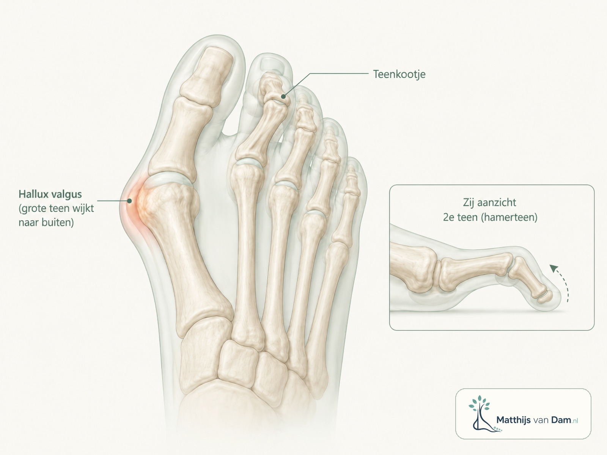
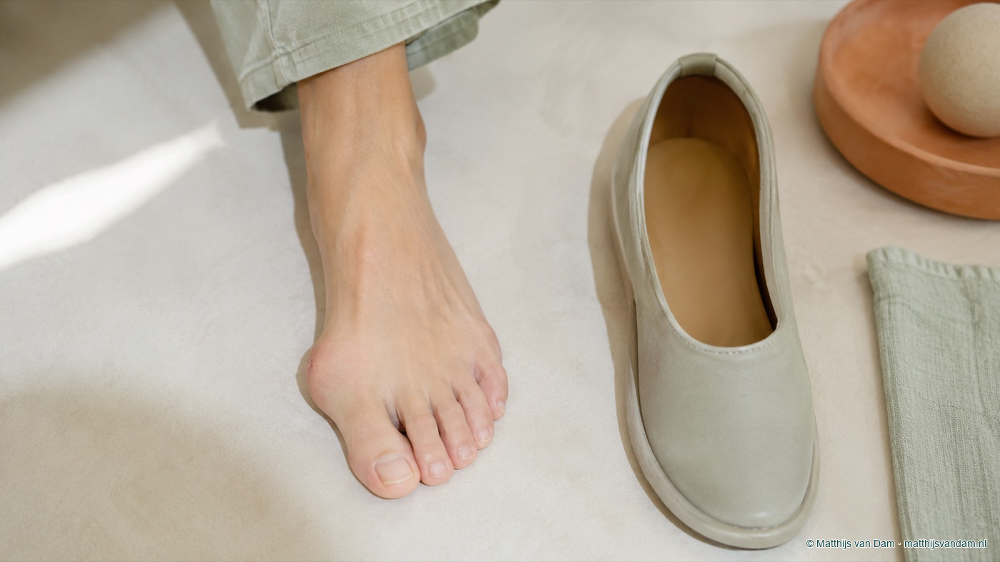

Wat is hallux valgus?
Bij hallux valgus staat de grote teen scheef richting de tweede teen. Aan de binnenzijde van de voorvoet kan daardoor een knobbel zichtbaar worden. Die knobbel is niet alleen extra bot: hij ontstaat vooral doordat het gewricht en het eerste middenvoetsbeentje anders gaan staan.
Hallux valgus kan langzaam ontstaan. De aanleg van de voet, soepelheid van gewrichten, leeftijd, schoenen en belasting kunnen allemaal meespelen. Soms komt het in families vaker voor. De oorzaak is niet altijd precies aan te wijzen.

Welke klachten passen erbij?
Veel mensen hebben vooral last van schoenen die drukken op de knobbel aan de binnenzijde van de voorvoet. De huid kan rood, gevoelig of verdikt worden. Soms ontstaan eelt, drukplekken of pijn onder de bal van de voet doordat de belasting verandert.
De grote teen kan tegen de tweede teen drukken. Daardoor kunnen ook kleine tenen, teennagels of de bal van de voet klachten geven. Niet iedereen met een zichtbare scheefstand heeft veel pijn, en niet iedere pijnlijke voorvoet komt door hallux valgus.
Kan hallux valgus ook een hamerteen geven?
Dat kan. Als de grote teen naar de tweede teen toe gaat staan, kan de tweede teen minder ruimte krijgen. Die teen kan dan omhoog of krom gaan staan en druk krijgen tegen de schoen. In het begin gaat het vaak om de tweede teen; bij toenemende voorvoetverandering kunnen soms ook de derde, vierde of vijfde teen mee gaan doen.
Dit betekent niet dat iedere hallux valgus vanzelf tot hamertenen leidt. De stand van de tenen, soepelheid, schoenen, huid, eelt, pijn onder de bal van de voet en eerdere behandelingen moeten samen worden beoordeeld.

Behandeling draait om klachten, drukproblemen, huid, schoenen, beperkingen en verwachtingen. Een operatie wordt niet besproken om alleen het uiterlijk van de voet te veranderen.
Onderzoek en diagnose
De diagnose wordt meestal gesteld op basis van het verhaal en lichamelijk onderzoek. Er wordt gekeken naar de stand van de grote teen, beweeglijkheid van het gewricht, drukplekken, huid, schoenen, steunzolen en eventuele klachten onder de bal van de voet.
Een röntgenfoto kan helpen om de stand van de botten en het gewricht beter te beoordelen. De foto alleen bepaalt niet automatisch de behandeling. De klachten en het doel van behandeling blijven minstens zo belangrijk.
Eerst niet-operatieve opties
Vaak wordt eerst geprobeerd om druk en irritatie te verminderen. Denk aan schoenen met genoeg ruimte voor de voorvoet, een zachter bovenwerk, bescherming van de knobbel, zoolaanpassing of advies over belasting. Soms kan een teenbeschermer of teenspreider tijdelijk comfort geven.
Voldoende breedte, lage hak en ruimte voor de tenen kunnen druk op de knobbel verminderen.
Een podotherapeut of schoentechnisch specialist kan meedenken over drukverdeling en schoenadvies.
Klachten hangen vaak samen met lopen, werk, sport en schoenkeuze; dat hoort bij de beoordeling.

Wanneer komt een operatie in beeld?
Een operatie kan worden besproken als klachten blijven bestaan ondanks passende niet-operatieve maatregelen. Het gaat dan bijvoorbeeld om pijn, terugkerende drukplekken, huidproblemen, schoenproblemen of duidelijke beperkingen in dagelijks functioneren.
Bij een standcorrectie wordt de stand van de grote teen en het eerste middenvoetsbeentje gecorrigeerd. De precieze techniek verschilt per voet en per situatie. Soms spelen ook klachten van de tweede teen, hamerteenstand of pijn onder de bal van de voet mee in de keuze.
Elke operatie kent herstel, beperkingen en risico's. Ook kan een scheefstand soms terugkomen of kunnen restklachten blijven bestaan. Daarom is het belangrijk om vooraf goed te bespreken wat het doel van behandeling is en wat wel en niet realistisch is.
Wat bespreek je tijdens een consult?
Tijdens een consult gaat het niet alleen om de vorm van de voet. Ook pijn, schoenen, werk, sport, huidproblemen, eerdere behandelingen, gezondheid en verwachtingen tellen mee. Neem zo mogelijk gebruikte schoenen, steunzolen en informatie over eerdere behandelingen mee.
Waar kan je terecht?
Deze pagina is algemene uitleg op matthijsvandam.nl en geen officiële ETZ-patiëntinformatie. De meeste voetklachten beginnen niet bij een orthopedisch chirurg. Bij nieuwe of niet-acute klachten is de huisarts vaak het eerste aanspreekpunt; afhankelijk van de situatie kunnen ook fysiotherapie, podotherapie of schoentechnische zorg een rol spelen.
Als specialistische beoordeling nodig is, loopt verwijzing via de gebruikelijke zorgkanalen. Voor afspraken, planning, uitslagen en praktische ziekenhuisinformatie zijn de officiële ETZ-kanalen leidend.
Deel via deze website geen medische gegevens, foto's, verwijsbrieven of vragen over lopende zorg. Gebruik deze website niet bij spoed of acute klachten. Neem dan contact op met de huisarts, huisartsenpost, de geldende spoedlijn of bel 112 wanneer dat nodig is.
Veelgestelde vragen
Is hallux valgus hetzelfde als een bunion?
Hallux valgus beschrijft de scheefstand van de grote teen. De knobbel aan de binnenzijde van de voorvoet wordt vaak bunion genoemd. In het dagelijks taalgebruik lopen die termen vaak door elkaar.
Kan hallux valgus leiden tot een hamerteen?
Hallux valgus kan de stand en belasting van de tweede teen beïnvloeden. Daardoor kan vooral de tweede teen in de knel komen of een hamerteenstand ontwikkelen. Bij toenemende voorvoetverandering kunnen soms ook andere tenen mee gaan doen.
Moet hallux valgus altijd geopereerd worden?
Nee. Bij veel mensen worden eerst schoenen, ruimte voor de voorvoet, zoolaanpassing, teenbescherming of belasting besproken. Een operatie komt pas in beeld als klachten en beperkingen daar aanleiding toe geven.
Wordt hallux valgus geopereerd om de voet mooier te maken?
Een operatie wordt niet besproken om alleen het uiterlijk van de voet te veranderen. Het gaat om klachten, drukproblemen, beperkingen, huidproblemen en de vraag of een correctie medisch passend is.
Kan hallux valgus terugkomen na een operatie?
Een scheefstand kan na behandeling soms terugkomen of restklachten geven. De kans daarop hangt af van voetvorm, techniek, herstel, belasting, schoenen en persoonlijke factoren.
Wat is het verschil tussen hallux valgus en hallux rigidus?
Hallux valgus gaat vooral over scheefstand van de grote teen. Hallux rigidus gaat vooral over artrose en stijfheid van het grote-teengewricht. Beide kunnen wel samen voorkomen.